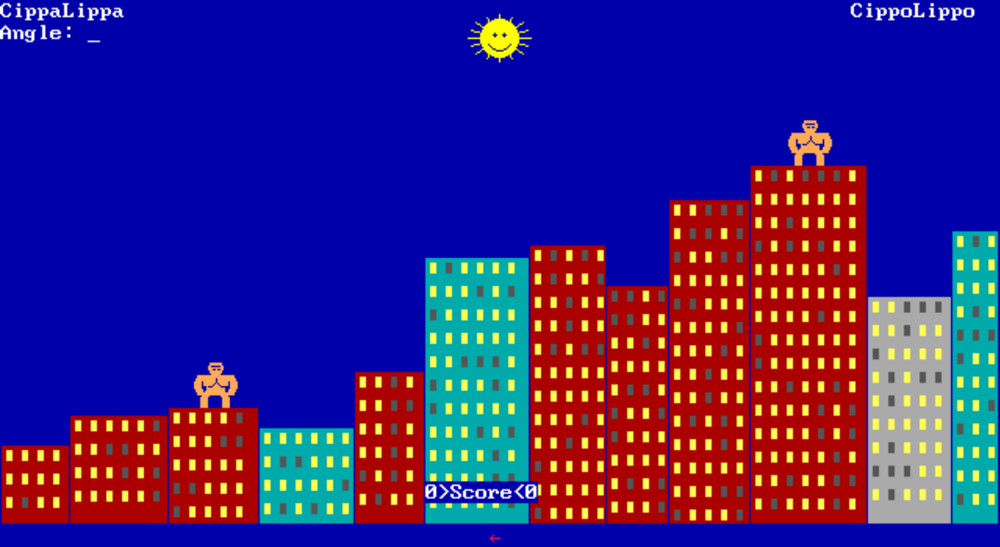

<div class="game-detail modal-body">
  <div class="container-fluid">
    <div class="row">
      <h1>GORILLAS</h1>
    </div>
    <div class="row row justify-content-center">
      <div class="col img-box">
        <!-- COVER (IMAGE MUST BE 380x216px)-->
        
      </div>
    </div>
    <div class="row mt-3">
      <p><b>Gorillas</b> (aka <b>Gorilla.bas</b>) was the first program that our founder Alesanco got his hands on at the age of 8, trying to destroy the code and creating the first of a long series of bugs in his life.</p>
      <p>It was a must that our first published game represented a port of this milestone in Alesanco's career.</p>
      <p>Download the source code from <a href="https://github.com/alesancogames/gorillas" target="_blank"><i class="fa fa-github" aria-hidden="true"></i> GitHub</a></p>
    </div>
  </div>
</div>